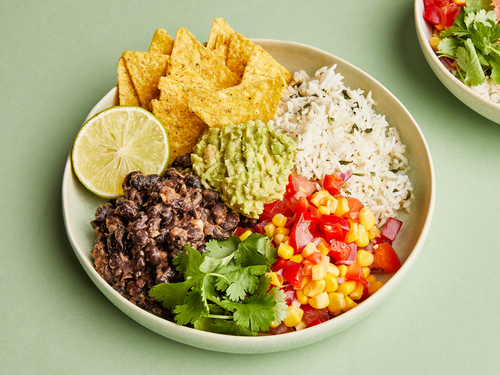

This burrito bowl will have you leaving chipotle in the dust, are you ready to start saving hand over fist and eating healthy
while doing so? Well my friend this is the recipe for you!
Ingredients
- White Rice
- Black Beans
- Red Onion
- Avacado
- Lettuce
- Tomato
- Ground Beef
- Taco Seasoning
- Chedder Cheese (Shreded)
Steps
- Wash your rice and place it in either a rice cooker, or a pan, if placing rice in a pan let rice come to a boil and then
once boiling take the heat to low, cover with a lid and let cook for 15-18 minutes
- Place a nonstick pan on the stove over medium-heat coat lightly with olive oil
- While the pan heats, slice your tomato and onion into bite sized pieces
- Place a small saucepan on the stove over low heat, open the can of beans and place into the pan to heat
as they cook, salt and pepper them to taste
- Brown the ground beef in the pan, make sure to break it up with a spatual to get it into smaller pieces
- After the beef has browed add in your taco seasoning packet follow the instructions on the packet to see how much
water needs added
- While the beef and taco seasoning meld together slice the avacado into bite sized piece
- Combine all the veggies into the bowl and serve!
Hungry for more?